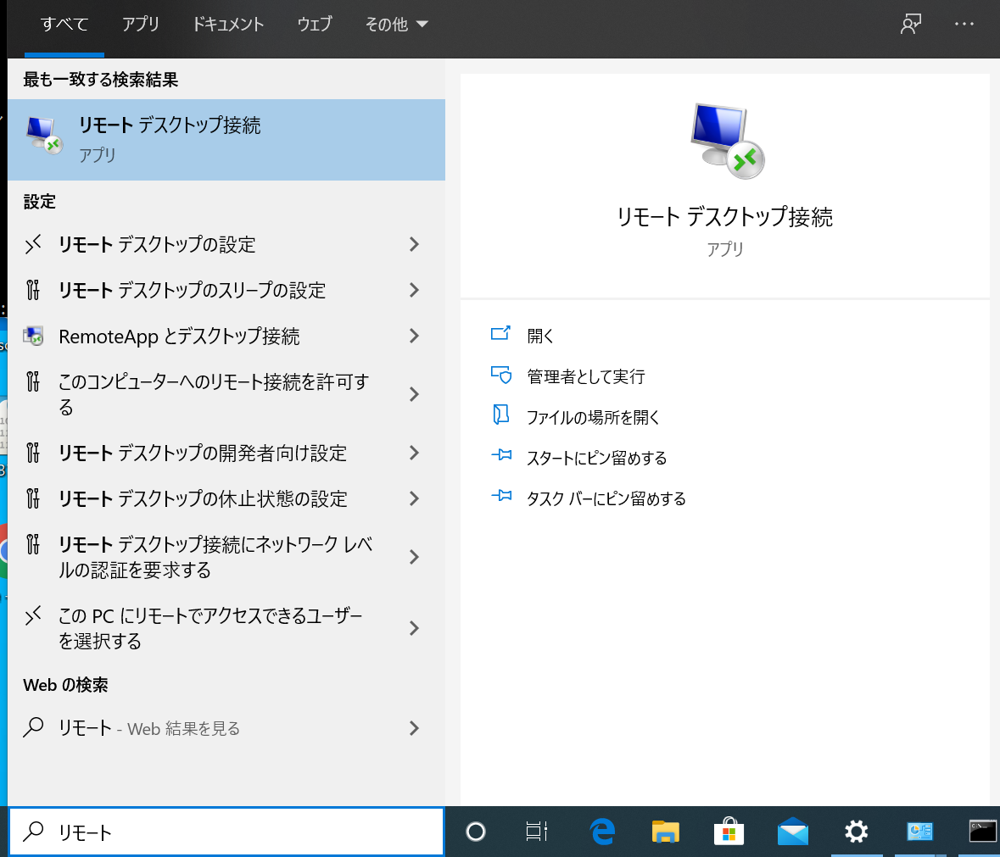

レシピ難易度：★★★★★
このレシピでは遠隔地のPCやネットワーク機器にセキュアにリモートアクセス可能な仕組みを構築し、手元のPCからの遠隔地の機器管理を実現します。
リモートアクセスの仕組みはエイビット社製ワイヤレスマイクロサーバー ピセロ AK-130 と SORACOM Napter を用います。この仕組みでは遠隔地のサーバやPCに追加のソフトウェアやハードウェアを導入する必要がなく、予めセットアップ済みのピセロ AK-130を遠隔地のネットワーク接続するだけでリモートアクセス出来るようになるのでため構成管理の面でシンプルです。
想定所要時間 | 2時間 |
概算費用 | 7000円（AK130本体と設定用PCを除く） |
本レシピのゴール
- 遠隔地のPCにセキュアにリモートデスクトップ接続できるようになる
利用するソラコムサービス
SORACOM Air | ピセロ AK-130でのセルラー通信を実現します。 |
SORACOM Napter | 遠隔地のSORACOM Airを搭載したデバイスにセキュアにリモートアクセスするために利用します |
リモートアクセスの仕組みは大きく分けて以下のように大別され、それぞれ課題があります。
- サーバ・クライアントに専用ソフトウェアをインストールする方式
- リモートアクセスするクライアントやサーバに追加のソフトウェアをインストールする必要がある
- 外部サービスを経由する場合がある
- VPNを経由する方式
- VPNアプライアンスの管理コストが高い
- VPNクライアントのライセンス管理とクライアントのキッティングが必要
- VPNアプライアンスを常にインターネットに公開する必要がある
いずれに方式にもメリットとデメリットがあり、システム管理者には多くの負担が必要でした。
SORACOM Napterとは？
SORACOM NapterはSORACOM Air SIMに
本レシピで利用するPisello/ピセロ AK-130（以下AK130）はQuad Core 64bit CPU「ARM Cortex-A53」を搭載した最新のSoM「Raspberry Pi Compute Module 3」とLinux OSを採用したワイヤレスマイクロサーバです。ギガビットSW-HUB（ミラーリング対応）チップを搭載し、PCIe Minicard スロットx2、USBポートx2、SIMスロットを装備しているため汎用性・拡張性が高く、大型ヒートシンク採用で安定運用が可能です。
本レシピではIoTストアで提供されているAK130にRaspbianをインストールし、追加の設定を行います。AK130はこのレシピで紹介しているもの以外に便利な使い方が用意されていますので、ご興味ある方は販売元のエイビット社にぜひお問い合わせください。
AK130の調達と平行して事前準備を進めます。別途購入な物品も含まれますので下記リストをご確認のうえ準備を進めてください。
物品名 | 概要 |
AK130設定用PC | Wi-Fiでインターネットに接続されたWindowsまたはmacOS搭載のパソコン Wi-Fiとは別に有線LANポートが必要です ※本レシピはmacOSの手順となります |
精密ドライバー | AK130本体のケースの取付・取り外しに用います |
microSDカード | AK130のLinux OSを格納するために用います |
SDカードライター | SDカードにデータを書き込むために用います |
USBメモリ | AK130に差分パッケージを適用するために用います |
USBケーブル | PCとAK130をシリアル接続するために用います AK130側はUSB Micro-Bです。 ケーブル製品例） |
LANケーブル（Cat5e以上） | AK130の設定に用います |
ボタン電池（リチウムコイン電池：CR1632） | AK130のリアルタイムクロックを動作させるために用います（必須ではありません） |
リモートデスクトップ先PCの情報確認
外部からリモートデスクトップする先のPCのIPアドレスとMACアドレスを確認しておきます。
Windows PCのコマンドプロンプトで「ipconfig /all」コマンドの出力を確認しておきます。
IPアドレス：「IPv4アドレス」で表示されているパラメータです
MACアドレス：「物理アドレス」で表示されているパラメータです
microSDカードの調達
AK130にはOSを格納するRaspbian用のSDカードが付属しませんのでmicroSDカードを別で調達します。microSDカードは耐久性能を重視してドラレコ向けの製品を調達するのがおすすめです。
ドラレコ向けmicroSDカードの例
https://www.samsung.com/semiconductor/minisite/jp/memorycard/microsd/proendurance/
microSDカードへのRaspbianの書き込み
microSDカードを調達できましたら続いてRaspbianのイメージをmicroSDカードに書き込みます。書き込みはRaspberry Piのダウンロードページで「Raspberry Pi Imager」をダウンロードして行います。本ドキュメントではmacOSでの作業例を示しますが、Windows環境の方は適宜読み替えて作業を進めてくださ
Raspbianのダウンロード
Raspbianは 以下のリンクからダウンロードします。
ダウンロードしたファイルはアーカイバでzip形式から解凍してimg形式にしおきます。
Raspberry Pi Imagerのダウンロード
Raspberry Piのホームページで「Raspberry Pi Imager」をダウンロードしますhttps://www.raspberrypi.org/downloads/
ダウンロードしたファイルを開いて、「Raspberry Pi Imager」のアイコンを「Applications」にドラッグアンドドロップします。
デスクトップの右上の虫眼鏡アイコン（Spotlight）をクリックして「Raspberry Pi Imager」を探して起動します
アラートダイアログが表示されたら「Open」をクリックします。
Raspbianのインストール
RaspbianとRaspberry Pi Imagerの両方を用意できたらパソコンにSDカードリーダーを接続し、microSDカードを挿入します。
Raspberry Pi Imagerを起動し、「CHOOSE OS」をクリックします。
メニューが表示されたら一番下までスクロールして「Use custom」をクリックします。
ファイルアクセスへの許可を求められたら「OK」をクリックします。
先にダウンロードしておいたRaspbianのimgファイルを選択します。
続いてRaspberry Pi Imagerで「CHOOSE SD CARD」をクリックします。
挿入したmicroSDカードを選択します。
※
RaspbianのイメージファイルとmicroSDカードを選択したら「WRITE」ボタンをクリックします。
パスワードを入力し「OK」をクリックします。
ダイアログが表示されたら「OK」をクリックします。
書き込みが完了するとダイアログが表示されます。「CONTINUE」をクリックしてSDカードライターからmicroSDカードを取り出してください。
リモートデスクトップの有効化
Windowsのデスクトップ左下の検索ウィンドウに「リモート」と入力し表示された「リモート デスクトップの設定」をクリックします。

表示された画面で「リモートデスクトップを有効にする」をクリックしてください。
ダイアログが表示されたら「確認」をクリックします。

まず最初にAK130自体の初期セットアップを行います。エイビット社提供のクイックスタートガイドを参照しSIMカード、ボタン電池（リチウムコイン電池：CR1632）、アンテナを取り付けます。取付作業は必ず本体から電源ケーブルを抜いた状態で行ってください。
SIMカードは予め別途購入したSORACOM Air SIMを利用します。SORACOM Airの導入についてはこちらのリンクをご参照ください。
microSDカードは模様のある面を上側にして、カチッと音がなるまで奥に押し込んでください。うまく取り付けられるとmicroSDカードは筐体の側面とフラットになります。
microSDカードは模様のある面を上にして差し込みます。
うまく取り付けられている例。
microSDカードを取り付けたらAK130に電源ケーブルを接続して起動します。
PCとのシリアル接続
PCとAK130をUSBケーブルで接続します。
PCでターミナルを起動してAK130にシリアル接続します。
- ボーレート：115200bps
- データ長：8ビット
- ストップビット長：1ビット
- パリティ：なし
- フロー制御：なし
screen /dev/tty.usbserial-14310 115200
接続したらエンターキーを押してログイン画面が表示されることを確認し、ログインします。
- ユーザ名：
pi/ パスワード：raspberry
差分パッケージの適用
エイビット社のWebサイトから差分パッケージをダウンロードしAK130に適用します。
こちらのWebサイトにアクセスしページ下部のリンクからインストールガイドと差分パッケージをダウンロードします。
https://www.abit.co.jp/products/ak130/
ダウンロードしたインストールガイドに従ってAK130に差分パッケージを適用します。
SORACOM接続設定
SORACOM接続にはAK130に追加のソフトウェアパッケージをインストールが必要です。
最初にAK130をPCを経由してインターネットに接続して必要なソフトウェアをインストールします。
AK130インターネット接続準備
初期セットアップ状態のAK130はインターネットに接続できないためmacOSのインターネット共有を経由して作業を進めます。
まず最初にmacOSのインターネット共有を有効にします。デスクトップ左上のリンゴマークをクリックして「System Preferences」を起動します。
「Sharing」をクリックします。
「Share your connection from」で「Wi-Fi」を選択し、「To computers using」で有線LAN接続を選択します。（図の例ではThunderbolt Ethernet）
2つの選択を終えたら、画面左側の「Internet Sharing」にチェックを入れます。
アラートダイアログが表示されたら「Start」をクリックします。
PCと起動済みAK130のLAN-1ポートをLANケーブルで接続します。
AK130追加設定
以下の作業はPCをAK130にシリアル接続して行います。
次のコマンドでIPアドレスが割り当てられていることを確認します（この例では192.168.2.8）
pi@raspberrypi:~$ ip a show eth0
2: eth0: <BROADCAST,MULTICAST,UP,LOWER_UP> mtu 1500 qdisc pfifo_fast state UP group default qlen 1000
link/ether 00:c0:ef:12:7f:15 brd ff:ff:ff:ff:ff:ff
inet 192.168.2.8/24 brd 192.168.2.255 scope global eth0
valid_lft forever preferred_lft forever
inet6 fe80::8878:8cb4:615c:5728/64 scope link
valid_lft forever preferred_lft forever
続いて以下のコマンドでwvdialをインストールします
sudo apt-get update sudo apt-get install wvdial -y
続いてAK130にSORACOM接続情報を設定します。
sudo sh -c 'cat /etc/wvdial_ak130.conf |\
sed -e "s/APN/soracom.io/g" \
-e "s/\(USER\|PASSWORD\)/sora/g" > /etc/wvdial.conf'
sudo sh -c 'echo "defaultroute\
replacedefaultroute" >> /etc/ppp/peers/wvdial"'
AK130起動時のセルラー接続を有効化します。
sudo systemctl enable wwan-modem@AK110
次のコマンドでAK130を再起動して設定を反映します。
sudo reboot
SSH接続の有効化
AK130の遠隔管理アクセス向けにSSH接続を有効化します。次のコマンドで設定画面を起動します。
sudo raspi-config
メニューが表示されたらカーソルキーで「5 Interfacing Options」を選択してエンターキーを押します。
続いて「P2 SSH」を選択してエンターキーを押します。
「Yes」を選択してエンターキーを押します。
「Ok」を選択してエンターキーを押します。
最後にカーソルキーを「Finish」に合わせてエンターキーを押します。
ネットワーク構成の確認
AK130を収容するネットワークの構成によって詳細は変わる場合がありますが、このレシピではLAN-1のネットワークが 192.168.0.0/24 で、AK130に 192.168.0.252/24 を割り当てます。
LAN-1(eth0)のIPアドレス設定
/etc/dhcpcd.conf
interface eth0
static ip_address=192.168.0.252/24
static routers=192.168.0.1 # LAN内のゲートウェイ
static domain_name_servers=192.168.0.1 # LAN内のDNSサーバNAT設定
AK130にNATの設定を追加します。以下コマンドの IPADDRESS の部分をリモートデスクトップ先のPCの情報確認で確認したPCのIPアドレスに置き換えて実行してください。
sudo sh -c 'sed -i -e "s/^#net.ipv4.ip_forward=1/net.ipv4.ip_forward=1/" /etc/sysctl.conf'
sudo sysctl -p
sudo iptables -t nat -A POSTROUTING -o ppp0 -j MASQUERADE
sudo iptables -t nat -A PREROUTING -i ppp0 -p tcp --dport 3389 -j DNAT \
--to IPADDRESS:3389
sudo apt-get install iptables-persistent -y「リモートアクセス先のPC」にルーティング設定を追加します。Windowsコマンドプロンプトを開いてコマンドを実行します。
route add 100.64.0.0 mask 255.192.0.0 192.168.0.252 -pここまでの準備で遠隔地のPCにリモートデスクトップする準備が整いました。早速SORACOM Napterでリモートデスクトップ接続をしてみましょう。
Microsoft Remote Desktopのインストール
App Storeアプリで「remote desktop」と検索し、Microsoft Remote Desktopをインストールします。
SORACOM Napterでのリモート接続設定
SORACOM Web コンソールにログインし、AK130内のSIMにチェックを入れてメニューから「On-demand Remote Access」をクリックします。
ダイアログの「Port to expose」に「3389」を指定し、アクセス許可の時間を30分〜「OK」ボタンをクリックします。
「Download Windows Remote Desktop profile」をクリックしてファイルをダウンロードします。
ダウンロードしたファイルをダブルクリックするとリモートデスクトップ接続できます。ログイン画面が表示されたらアクセス先PCのユーザ名とパスワードを入力してログインします。